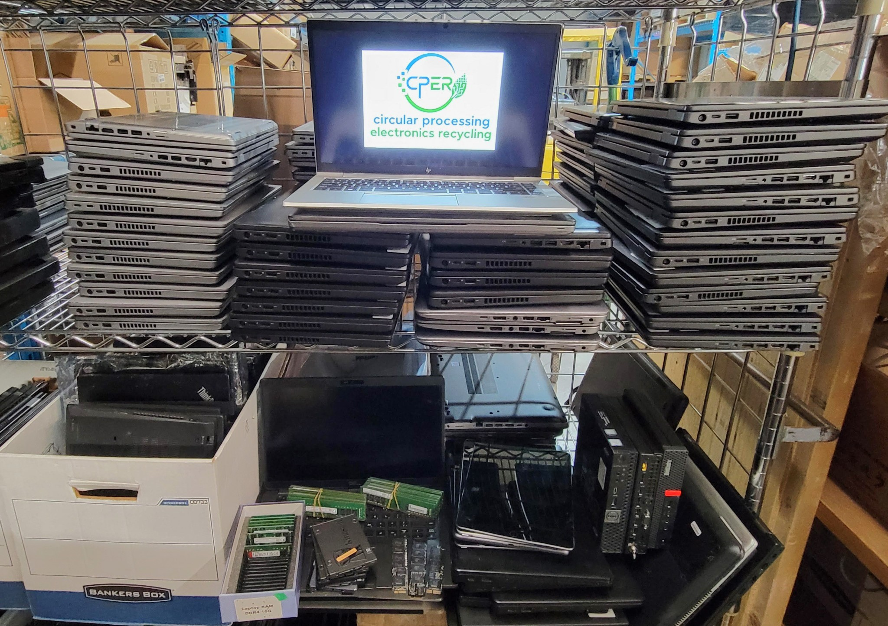

01 · MODÈLE
Âge et caractéristiques
La génération du processeur, la mémoire, le stockage, la configuration et le fabricant influencent la demande.
Certains portables, téléphones, serveurs, matériel réseau, composantes et autres appareils réutilisables peuvent être admissibles à l’achat.

Lorsque le matériel est encore utile et recherché, la revente peut produire plus de valeur que le recyclage des matières. Nous évaluons l’âge, le modèle, les spécifications, l’état, les quantités et la demande.
La génération du processeur, la mémoire, le stockage, la configuration et le fabricant influencent la demande.
L’état esthétique, les mots de passe, les chargeurs et les pièces manquantes peuvent faire varier la valeur.
Les lots plus importants et plus uniformes sont souvent plus efficaces à tester, traiter et revendre.
La valeur du matériel change selon l’offre, la demande de revente et le marché des matières premières.
Les ordinateurs hors d’usage, les cartes électroniques et les autres appareils non réutilisables sont évalués selon leur contenu potentiel en matières récupérables, par exemple le cuivre, l’aluminium, l’acier et certaines catégories de cartes contenant des métaux de valeur. La qualité du lot, le tri, la quantité, les coûts de traitement et le marché des matières premières peuvent tous influencer la valeur.
Vous n’avez pas besoin d’un inventaire parfait. Une estimation des quantités, quelques modèles et des photos suffisent généralement pour commencer.